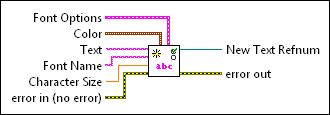
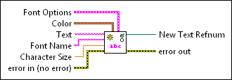

Create Text with Alignment VI
Owning Palette: Geometries VIs
Requires: Full Development System
Creates a text object with customizable format and position options.
 Add to the block diagram Add to the block diagram |
 Find on the palette Find on the palette |
Owning Palette: Geometries VIs
Requires: Full Development System
Creates a text object with customizable format and position options.
| Add to the block diagram |
Find on the palette |
 |
Font Options specifies alignment, position, and wrap options for the text.
| ||||||||||||||||||||||||||||||||||||||||
 |
Color specifies the color of the object in RGBA format. Color accepts a cluster of numeric values 0 through 1, where 0 represents the absence of the red, green, or blue color and 1 represents a full saturation of the color. The alpha value indicates the transparency of the red, green, and blue colors.
| ||||||||||||||||||||||||||||||||||||||||
 |
Text specifies the text of the object. | ||||||||||||||||||||||||||||||||||||||||
|
Font Name specifies the font to use for the text. If you misspell the font name or specify a font that is not installed on the computer, the operating system selects a font. | ||||||||||||||||||||||||||||||||||||||||
 |
Character Size specifies the height of the text characters in coordinate units. For example, set character size to 1 to create text characters equal in height to a geometric object with a height of 1. The default is 0.5. | ||||||||||||||||||||||||||||||||||||||||
 |
error in describes error conditions that occur before this node runs. This input provides standard error in functionality. | ||||||||||||||||||||||||||||||||||||||||
 |
New Text Refnum returns a reference to the text, including the font and color you specify. | ||||||||||||||||||||||||||||||||||||||||
 |
error out contains error information. This output provides standard error out functionality. |